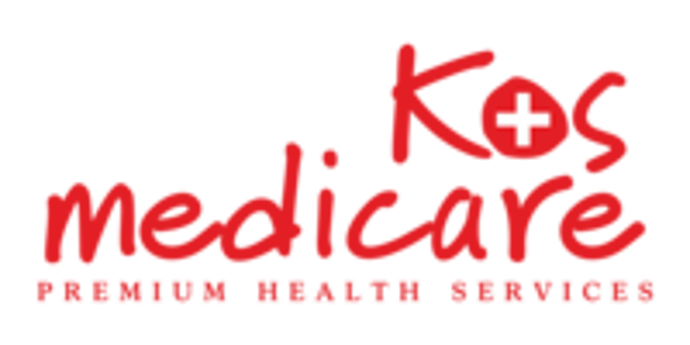

Medicare in Kos is een toegankelijke en betrouwbare medische voorziening voor toeristen en bezoekers die tijdens hun verblijf een huisarts nodig hebben of gezondheidsklachten ervaren. De artsen en medewerkers zijn Engels sprekend en gewend om internationale patiënten te helpen.

MEDICARE KOS

Alles rondom verzekeringen, doorverwijzingen en administratie is goed geregeld, waardoor je snel en zonder gedoe geholpen wordt. Voor niet-acute medische vragen of plotselinge klachten kun je hier eenvoudig terecht.
Adres
Leof. El. Venizelou 5, Kos 853 00
Openingstijden
Elke dag 09:00 tot 22:00